Week 1: Assembly & Bring-up¶
Week 1 Overview & Objectives¶
Week 1 focuses on building and bringing up the hardware platform for the inverted pendulum. The work proceeds in two parts: (1) three parallel tasks that can be done simultaneously by different students, and (2) a team bring-up process where the circuit is assembled and verified step-by-step.
Objectives:
-
Complete the mechanical assembly (sensor, motor, breadboard, battery box)
-
Set up the microcontroller environment and verify toolchain / serial debugging
-
Design the full breadboard wiring in Fritzing before touching the real breadboard
-
Assemble and verify the circuit in three stages (motor \(\rightarrow\) angle sensor \(\rightarrow\) full integration)
-
Record evidence (photos, Fritzing files, and bring-up results) for submission
Parallel tasks (recommended roles): Student A (mechanical), Student B (microcontroller), Student C (Fritzing/wiring design). Roles can be rotated, but all students should participate in the stage-by-stage bring-up and verification.
Electronic Components Explanation¶
Next, we will assemble the electronic circuit, but before that, we will explain the parts to be used. The specific circuit assembly work is described later in this Week 1 section, so please read the explanation first.
Warning
-
Semiconductor parts (ICs like microcontrollers, LSIs) are easily destroyed by static electricity (especially in dry winter). Be careful not to touch the pins with bare hands.
-
Your body is charged! Before assembling the electronic circuit, touch a large conductor (such as a door or metal part of a desk) to discharge your body.
-
Once discharged, be careful not to get charged during work. Moving your hips on a chair or taking off a sweater generates static electricity, so try to stay still as much as possible.
-
Even if discharged, do not touch the IC/LSI terminals directly with your fingers just in case.
Resistor and Capacitor Markings (Value & Polarity)¶
Resistors: how to identify the resistance value¶
You can confirm a resistor value either by measuring it with a multimeter (set to the \(\Omega\) range), or by reading the color bands. For accurate measurement, it is best to measure the resistor out of circuit (or at least lift one lead), because in-circuit measurements can appear lower due to parallel paths.\ 4-band color code (most common): 1st band = 1st digit, 2nd band = 2nd digit, 3rd band = multiplier, 4th band = tolerance.\ Digit colors: Black=0, Brown=1, Red=2, Orange=3, Yellow=4, Green=5, Blue=6, Violet=7, Gray=8, White=9.
- Example (100\(\Omega\), 4-band): Brown--Black--Brown with a tolerance band typically Gold (\(\pm 5\%\)) or Brown (\(\pm 1\%\)). Here, Brown=1 and Black=0, so the first two bands give "10"; the third band Brown is the multiplier \(\times 10^{1}\), so \(10 \times 10 = 100\,\Omega\).
Some precision resistors use a 5-band code; if you see five bands, use the same idea (more significant digits + multiplier + tolerance).\
Numeric markings (often on SMD resistors): resistors may also be printed with digits, which is similar in spirit to the capacitor 3-digit code, but the unit is \(\Omega\). A common 3-digit resistor code is: first two digits = significant figures, third digit = number of zeros (\(\times 10^n\)) in \(\Omega\). For example, 101 means \(10 \times 10^{1}=100\,\Omega\), and 102 means \(10 \times 10^{2}=1\,\textrm{k}\Omega\).
Capacitors: how to read the capacitance value and polarity¶
Many small bypass capacitors are non-polarized (e.g., ceramic/film) and can be inserted either way, while electrolytic/tantalum capacitors are polarized and must be oriented correctly.
-
Typical markings: some capacitors print the value directly (e.g.,
0.1u,100n), while many small ceramic capacitors use a 3-digit code in pF (first two digits are significant figures, the third digit is the number of zeros). For example,104means \(10 \times 10^{4}\,\mathrm{pF}=100\,\mathrm{nF}=0.1\,\mu\mathrm{F}\). -
Polarized vs. non-polarized: ceramic/film capacitors have no polarity; aluminum electrolytic and tantalum capacitors are polarized. For typical aluminum electrolytics, the stripe on the body indicates the negative side (and the longer lead is often the positive side). PCB symbols may also mark
+.
Motor Driver (DRV8832)¶
In the above example, we expect to drive the motor with the voltage output to pin p18 on line 7, but unfortunately, the output from mbed can only flow a small current, so the motor cannot be driven by connecting it directly to the pin. Therefore, the motor is driven via a motor driver IC capable of flowing a large current.
The driver used this time is Texas Instruments' DRV8832. Since it is a small IC and difficult to use, we use one mounted on a board (AE-DRV8832: sold at Akizuki Denshi in Akihabara). The board has 3 input pins, 2 of which determine the motor drive direction (sign of voltage) (IN1, IN2), and the remaining 1 determines the applied voltage (absolute value) (VSET). We connect 2 digital signal outputs of mbed directly to the pins determining the drive direction. On the other hand, we connect the analog signal output of mbed to the pin instructing the applied voltage. There is also a pin for current limiting (ISENSE, pin 2), but since we do not limit the current this time, connect it directly to GND (0V, reference voltage of the circuit. Minus side of the battery in this case).
The two wires coming out of the motor will be connected to pins 1 and 3 of the driver, but the connection between the motor and the driver will be frequently attached and detached during future experiments. However, since the motor wires are soft and difficult to insert into and remove from the breadboard, do not connect the motor wires directly to the driver, but connect them via separate jumper wires. You can disconnect the motor and driver by inserting/removing jumper wires (leave the motor wires that are difficult to insert/remove plugged into the breadboard).
For other details regarding the motor driver, refer to the circuit example 1 and the datasheet 2.
Photo-interrupter & Inclination Sensor¶
Photo-interrupter¶
In the inverted pendulum of this exercise, all sensors (= inclination sensor, rotary encoder. However, the rotary encoder will be described later) are realized with photo-interrupters. Photo-interrupters can be obtained very cheaply, and the ones used this time are sold for about 40 yen each in Akihabara. For the convenience of the exercise, an inclination sensor using photo-interrupters is prepared in advance, but the rotary encoder described later will be made by each of you.
A photo-interrupter is an optical element combining an LED and a phototransistor. In many cases, wavelengths in the infrared region are used, so the light cannot be seen directly. As shown in Figure (Fig.), there are reflective and transmissive types of photo-interrupters, which detect the presence of an object by the presence or absence of reflected light or transmitted light, respectively. Especially in the case of the reflective type, since the amount of reflected light changes depending on the reflectance (\(\approx\) color) of the object surface and the distance to the object (see Fig.7 of the datasheet), it can also be used as a color sensor (discriminating gray scale) or a distance sensor. This time, we apply this function as a distance sensor to realize an inclination sensor. (In the rotary encoder described later, the photo-interrupter reads the black and white pattern on the scale surface.)
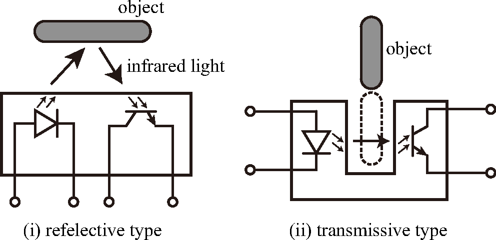
The basic circuit of a photo-interrupter is shown in Figure (Fig.). First, the LED must be lit. Looking at the datasheet 3, the forward voltage \(V_F\) (1.2V) and the typical current value for lighting (20mA) are displayed. The forward voltage is the voltage drop across the LED during operation. This time, since the 3.3V of the three-terminal regulator described later is used as the power supply voltage (VCC), if the forward voltage is 1.2V, the difference of 2.1V must be dropped by a resistor connected in series. To drop 2.1V at a current value of 20mA, Ohm's law tells us that \(R=2.1\textrm{V}/20\textrm{mA}=105\Omega\) is good, but since a \(105\Omega\) resistor is not sold, we use a close value of \(100\Omega\). See Section 3.2.1 for how to identify resistor values by color code or multimeter.
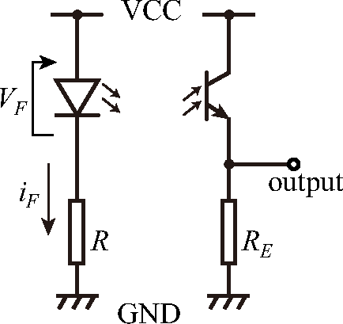
Note that if a current exceeding the absolute maximum rating (50mA this time) flows, the LED will burn out in an instant. Be careful never to connect directly to the power supply without a resistor (The distributed inclination sensor has a \(100\Omega\) resistor soldered to the tip of the wiring from the beginning so that this does not happen).
On the side of the phototransistor receiving light, connect a resistor to the emitter to read the voltage (a resistor can be attached to the collector side, but the output voltage is inverted). When light enters the phototransistor, current flows between the collector and emitter. This current is converted to voltage by flowing through the external resistor. The obtained voltage is roughly proportional to the amount of incident light. The value of the external resistor is determined while looking at the datasheet and actual situation. For the same amount of incident light, a larger resistance value yields a larger voltage, but since output cannot exceed the power supply voltage, set an appropriate resistance value so that the output does not saturate.
Since the LED of the photo-interrupter is infrared light and cannot be seen visually, you may feel anxious about whether it is really working. In such a case, let's look at the LED with a smartphone or computer camera. You should see the LED glowing purple. However, some smartphones have an infrared cut filter in the camera part, so the light of the infrared LED cannot be seen. In that case, try the front camera as well. Front cameras often do not cut infrared rays. If you want to know if your smartphone camera has an infrared cut filter, look at the light emitting part of a TV remote control with the camera. If no filter is inserted, you should see a fierce brightness when pressing the remote button (compared to that, the photo-interrupter used this time is much dimmer).
Inclination Sensor¶
Gyro sensors are often used to measure the inclination angle of inverted pendulums, but gyro sensors measure angular velocity and need to be integrated to find the angle (this involves drift problems). This time, we use photo-interrupters to measure the angle more directly.
An inclination sensor should already be attached to the bottom of the inverted pendulum. This inclination sensor consists of two photo-interrupters. The photo-interrupters at the front and rear of the machine measure the distance (reflected light amount) to the floor surface, respectively, and output the difference in this distance as an angle.
It measures the angle with respect to the floor surface, not the angle with respect to the vertical plane. Therefore, if the inclination of the floor changes, an error occurs in the sensor output (if considering the vertical plane as the reference).
Also, if the reflectance of the floor surface changes, the sensitivity of the sensor changes. On a floor surface with high reflectance (bright), the inclination will likely be output as large. However, brightness here is brightness in the infrared region, so it does not necessarily match the visual (visible light region) brightness.
Three-terminal Regulator¶
This time, batteries are used as the power source for the entire inverted pendulum, but if a large current is drawn from the battery, the generated voltage drops due to internal resistance. In this circuit, a large current flows along with the motor drive, so the output voltage of the battery fluctuates violently according to the motor operation. If the photo-interrupter is driven using this fluctuating voltage, large noise will be superimposed on the sensor output, so the voltage for driving the photo-interrupter is stabilized using a three-terminal regulator.
A three-terminal regulator is an IC that takes a fluctuating voltage as input and outputs a constant voltage (lower than that). Various model numbers of three-terminal regulators are sold, but basically, the last two digits of the model number represent the output voltage. This time, we use a regulator with model number LD33 (precisely LD1117V33) 4. The output voltage is 3.3V. All photo-interrupter related voltages should use the output of this three-terminal regulator. On the other hand, since we want to separate the power supply for the motor and the photo-interrupter, take the power supply for the motor driver directly from the battery, not from the three-terminal regulator.
Actually, mbed's board is also equipped with a 3.3V three-terminal regulator (you can see a chip called LD33), and stabilized 3.3V is output from the VOUT pin on the upper right (see Figure (Fig.)). You can use this voltage, but due to the size of the breadboard, this pin cannot be accessed, so we will install a regulator ourselves this time.
Parallel Assembly Tasks¶
The following three tasks can be performed in parallel. Each task produces outputs that will be used in the team circuit assembly and bring-up.
Task A: Mechanical Assembly (Student A)¶
Now that you understand the outline of control, let's look at the assembly of the inverted pendulum (Actual assembly will be done on the day of the exercise, but please read through it in advance).5 The parts used here are as follows6 (electrical parts are excluded as they are explained separately in this Week 1 section).
-
Universal board (Tamiya, partially processed) + Wheels (Tamiya)
-
Universal board (Tamiya) + Breadboard for circuits + mbed LPC1768
-
DC Motor (Mabuchi Motor RE-280RA) 7 (Rubber roller attached to the tip)
-
Motor bracket
-
Battery box (Rechargeable AA batteries x 4)
-
Inclination sensor (Unique part of this exercise)
-
L-bracket
The universal board with wheels (No. 1) will be the center of assembly. Below, parts will be attached to this board.
Attaching the Inclination Sensor¶
First, attach the inclination sensor (No. 6) to the bottom of the universal board with wheels (No. 1). Use the L-bracket (No. 7) to attach it as shown in Figure (Fig.).
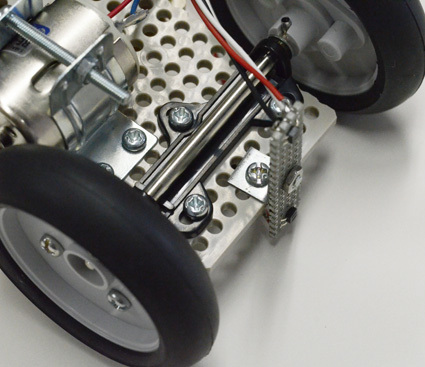
Attaching the DC Motor¶
Next, attach the DC motor (No. 3). Use the motor bracket (No. 4) to attach it to the universal board (No. 1) (attach it to the same surface as the axle. See Figure (Fig.)). The screws for attaching the bracket to the board are slightly smaller M2 screws. The screw heads are small, so it might be difficult to turn them with the screwdriver included in the kit, but try to secure them.
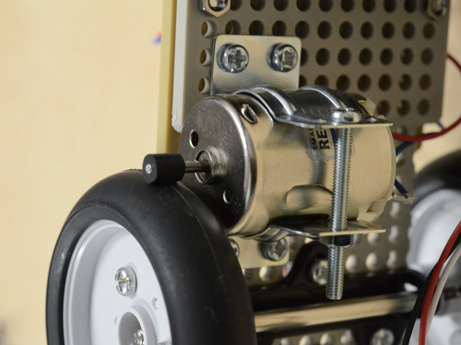
When fixing the DC motor, adjust it so that the rubber roller of the DC motor touches the tire \"lightly\". The point is to adjust it so that it is touching lightly, as driving will not be possible if pressed too strongly. However, since the tire is not a perfect circle, if adjusted too lightly, the roller may slip partially when the tire is rotated. Rotate the tire once to confirm that the roller is always in contact.
Attaching the Breadboard¶
Screw the No. 2 universal board with the breadboard onto the No. 1 universal board. Bolts should be protruding from this No. 2 board. Do not remove these bolts as it is difficult to reattach them (of course, remove/attach the \"nuts\" during installation). The No. 1 board should have screws for motor attachment, so make sure they do not interfere (overlap) (if forced to screw while overlapping, the board will crack). Also, since the battery box will be attached in the next part, decide the position of the board while considering the mounting position of the battery box.
The microcontroller should already be attached to the breadboard. Attach the universal board so that the microcontroller is on the upper side (USB port facing up). Do not remove the microcontroller on the breadboard, as the pins may break.
Attaching the Battery Box¶
Finally, attach the battery box (No. 5) to the universal board (No. 1) with double-sided tape. Since the battery box is the heaviest part, the characteristics of the inverted pendulum change depending on the mounting position. You can stick it anywhere there is space, but be careful about the front and back of the battery box (if you put double-sided tape on the lid side, the lid will not open). Consider how to stick it so that you can access the switch on the back of the battery box.
Note that double-sided tape is surprisingly strong. If you stick a large amount, you won't be able to peel it off. Two strips of about 5 cm length on the top and bottom are sufficient.
Up to this point, the basic mechanical structure is complete. A completed example is shown in Figure (Fig.).
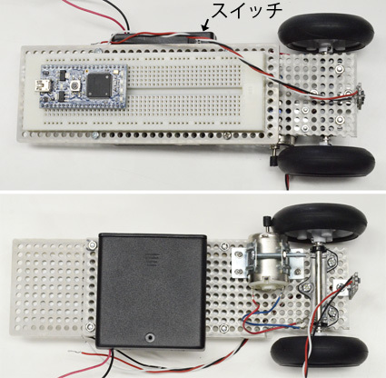
Task B: Microcontroller Setup (Student B)¶
The microcontroller used this time is a series called mbed8. The feature of mbed is that the development environment using C/C++ language is prepared on the cloud (online), and you can start development immediately by signing up. Also, writing a program to the microcontroller is as simple as connecting the mbed via USB (recognized as a USB drive by the computer) and copying the compiled program, making it easier to handle compared to other microcontrollers. There are various microcontroller boards in the mbed series, but this time we will use the most standard LPC1768.
Keil Studio Cloud signup¶
First, access the Keil Studio Cloud9 and create an account. After signing up, connect the microcontroller to your computer with the included USB cable. It will be recognized as a USB drive. In the upper left of the compiler screen, \"mbed LPC1768\" should be selected as the microcontroller board (Build Target) to be used.
Compile a sample program¶
In the compiler screen menu, select \"File\" \(\rightarrow\) \"New Project\" and create a new program using mbed_blinky as a template (see Figure (Fig.)). Specifically, select \"Mbed2-example-blink\" at the bottom of Example Project, and set the Project Name as you like. A new program with code to blink an LED will be created, so \"Compile\" it as is. Compilation can be done by clicking the icon that looks like a hammer. When compilation is finished, an executable file (extension .bin) is downloaded, so write this to the USB drive (mbed). Just drag and drop it perfectly.
| Create new project | Select example template | Compile button |
|---|---|---|
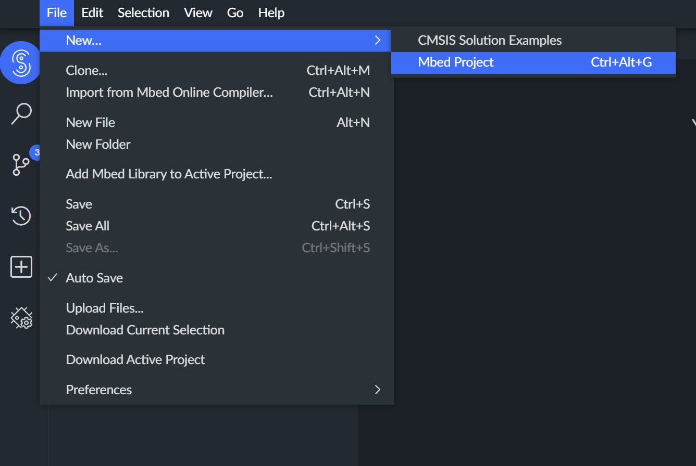 |
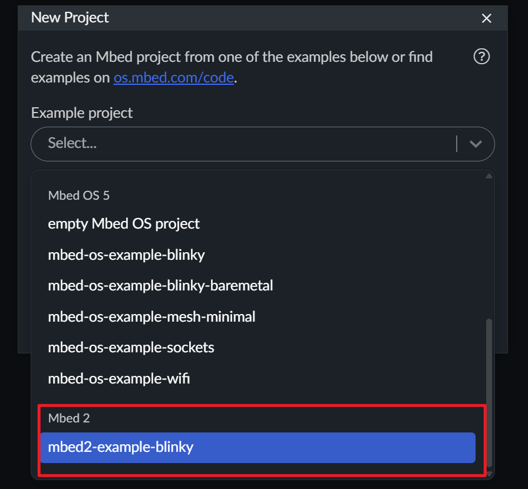 |
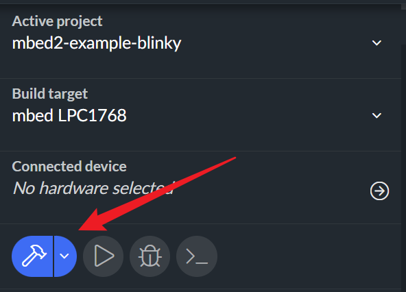 |
After writing the program, press the button in the center of the microcontroller board (this is the reset switch). Then, the newest file in the USB drive (= the file written last) is executed.
In the sample program, if the left LED among the 4 LEDs lined up at the bottom of the mbed board blinks, it is successful. If successful, try rewriting the program (main.cpp file) a little, such as changing the LED blinking time, and practice the flow of Compile \(\rightarrow\) Run.
* Mac users may not work well with the above. In that case, refer to the file \"Write Error and Countermeasures on macOS\" and execute.
Pin usage explanation¶
The microcontroller board used this time has various input/output functions. For example, 26 channels of digital signal I/O, 1 channel of analog voltage output by built-in DA converter, and 6 channels of voltage input by AD converter are available. Besides this, there are 6 channels of PWM (Pulse Width Modulation) signal output, etc., but assigning all these functions to individual pins would require a huge number of pins and the board would become huge.
Generally, these functions are not all used at the same time, so in this board (and microcontrollers in general), multiple functions are assigned to one pin, and the function of the pin is selected from the program as needed. This function assignment is shown in Figure (Fig.).
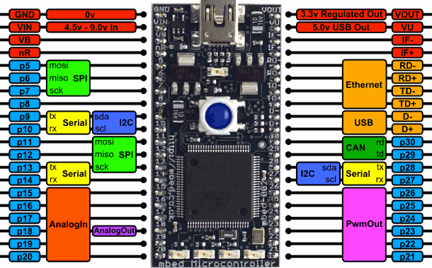
The pins available for user signal I/O are the 26 pins labeled \"pXX\" (XX is a number) in the outermost columns on the left and right. All these pins can be used for digital signal input or output. Also, by specifying from the program, functions written next to the pin name can be used. For example, looking at pin p18 at the bottom left, you can see that it has AnalogIn and AnalogOut functions. That is, a total of 4 functions: digital signal input, digital signal output, analog signal input, and analog signal output are assigned to this pin. Among these 4 functions, if you want to use the analog signal output function, in the program:
AnalogOut aaa(p18);
By declaring this, AnalogOut is selected as the function of p18. The declared object (aaa above) can be written to (or read from in the case of AnalogIn) like a variable. For example,
aaa = 0.5;
If you do this, an analog voltage of 0.5 times the full scale (3.3V) (i.e., 1.65V) is output to p18. Conversely, when setting this pin as analog input,
AnalogIn aaa(p18);
... (omitted)
b = aaa;
Like this, using the declared object aaa, you can read the voltage value input to p18 (ratio to full scale = 3.3V) (in this example, the value enters variable b).
For details, refer to the reference manual on the following page.
https://os.mbed.com/handbook/Homepage
Control program basics¶
In a feedback control program, the following processes are repeated.
-
Reading sensor signals
-
Control calculation
-
Output of calculation result
Although 'for' loops and 'while' loops can be used for repetition, the repetition time is not known accurately, and (if there are conditional branches such as 'if' inside the loop) the repetition cycle changes depending on the processing content.
In feedback control and digital signal processing, it is important that the repetition time (sampling time) is fixed and known. Therefore, generally, a timer is used to manage time. As specific programming methods using a timer, there are methods using timer interrupts and methods using threads, but this time we use timer interrupts. A simple program example is shown below (numbers on the left are line numbers for explanation).
------------------------------------------------------------------------
1: AnalogIn ad(p20);
2: AnalogOut da(p18);
3:
4: void int0() {
5: theta = ad; // Reading sensor signal
6: command = theta * Kp; // Control calculation
7: da = command; // Output
8: }
9:
10: int main() {
11: t_int.attach(&int0, 0.001); // Start timer interrupt
12: while(1); // Infinite loop as nothing else to do
13: }
------------------------------------------------------------------------
Here, taking the case of P control as an example, the main part of the program is shown. The C language program is executed from the main function on line 10, but the main function is done after setting the timer interrupt on line 11 (setting here calls function 'int0()' every 0.001 seconds). When the main function ends, the execution of the entire program also ends, so it enters an infinite loop so as not to end (line 12).
On the other hand, the function 'int0()' from line 4 specified for the timer interrupt processing is the main body of the control program. In this example, line 5 reads the sensor signal input from outside the microcontroller, line 6 calculates P control, and line 7 outputs voltage outside the microcontroller. Every time a signal comes from the timer, this function is executed, and as a result (in this example) repetitive processing with a 1ms period is realized.
The interrupt processing function must definitely finish within the interrupt period (1ms in the above example). If processing does not finish within the interrupt period, the next interrupt enters, and processing breaks down. Therefore, it is an iron rule to avoid time-consuming tasks within the interrupt processing function. Especially requiring caution is function calls.
Function calls can be written in one line from the perspective of writing a program, so we tend to imagine that the execution time is short, but some functions have unexpectedly long processing times. Easy calling of such functions from within an interrupt processing function causes the interrupt processing to break down. Specifically, string processing functions such as 'sprintf()', memory processing functions such as 'malloc()', and mathematical functions such as 'sin()' have long execution times and tend to cause trouble.
Also, since function calls themselves have large processing overhead, it is safer not to define and call functions yourself excessively. Although there is an idea to group multiple processes into a function to improve program readability, in such cases, it is better to use inline functions or macro definitions if possible (these have no overhead at the time of calling).
Serial communication & debugging¶
Serial communication (UART) is one of the most important debugging tools when developing microcontroller programs. The mbed LPC1768 has built-in USB-to-Serial functionality, which allows you to send debug messages from your program to your computer. This is particularly useful when debugging control programs, as you can monitor variable values and program behavior in real time without interrupting the control loop.
UART Communication Principle: UART (Universal Asynchronous Receiver-Transmitter) is a hardware communication protocol that transmits data one bit at a time over a single wire. Unlike synchronous protocols that require a shared clock signal, UART is asynchronous---both the transmitter and receiver must agree on the communication speed (baud rate) beforehand. Each byte of data is transmitted as a frame consisting of: (1) a start bit (logic low), (2) 8 data bits (LSB first), (3) an optional parity bit for error checking, and (4) one or more stop bits (logic high). The mbed LPC1768 includes a built-in USB-to-Serial converter chip that bridges the UART interface (USBTX/USBRX pins) to USB, allowing seamless communication with your computer without external hardware.
To use serial communication in your program, you need to create a Serial object using pins USBTX and USBRX, which are connected to the USB interface. A simple example would be:
Serial pc(USBTX, USBRX);
int main() {
pc.baud(9600); // Set baud rate to 9600 bps
pc.printf("Hello, World!\n");
while(1) {
pc.printf("Counter: %d\n", counter);
wait(1.0);
}
}
The baud rate determines the communication speed and must match the setting in your terminal software. Common values are 9600 bps (recommended for beginners due to its reliability) or 115200 bps (faster, commonly used for debugging). Other standard rates include 4800, 19200, 38400, and 57600 bps.
When the mbed is connected via USB, it appears as a serial port on your computer (typically COM3 or similar on Windows, /dev/tty.usbmodem* on macOS, /dev/ttyACM* on Linux). There are several ways to view these serial messages. The most convenient option is to use the built-in serial monitor in Keil Studio Cloud, which allows you to view serial output directly in the web browser without any additional software. Alternatively, you can use traditional terminal software such as Tera Term or PuTTY on Windows, or the screen command and CoolTerm on macOS/Linux. The Arduino IDE Serial Monitor also works well on all platforms.
Custom Debugging Tools: We provide three specialized debugging tools in the directory10, each consisting of three files:
-
.cpp file: mbed microcontroller program (C++ source code). You can read and modify this code to understand how the program works or customize it for your needs.
-
.bin file: Pre-compiled binary executable ready to flash directly to mbed LPC1768. Simply drag-and-drop this file onto the mbed USB drive to program the microcontroller---no compilation needed.
-
.pde file: Processing11 visualization program that runs on your computer. This provides a graphical interface to display real-time data received from mbed via serial communication.
To use these tools: (1) Flash the .bin file to mbed by copying it to the mbed USB drive, (2) Press the reset button on mbed, (3) Run the corresponding .pde file in Processing. If you want to modify the mbed program, you can edit the .cpp file in Keil Studio Cloud, compile it to generate a new .bin file, and flash that to mbed. The tools use frame-based serial protocols (with header bytes 0xAA 0x55) to reliably transmit multiple data values per frame, ensuring proper synchronization between mbed and the PC visualization. See the README.md file in the directory for detailed documentation on each tool, pin assignments, communication protocols, and troubleshooting tips.
Serial communication is invaluable for debugging control programs. You can print variable values to verify calculations, monitor control loop timing by printing timestamps, check sensor readings by displaying raw data, and verify program flow by adding messages at key execution points. For example:
pc.printf("Angle: %f, Motor: %f\n", theta, motor_output);
However, be cautious when using printf inside interrupt service routines, as it can take significant time and may disrupt timing-critical control loops. For time-critical debugging, consider toggling a digital output pin and observing it with an oscilloscope instead. For more details on Serial communication, refer to the mbed Serial API documentation.
Task C: Breadboard Wiring Design (Student C)¶
How to use Breadboard¶
A breadboard is a board often used for prototyping electrical circuits, allowing simple circuit construction without soldering. Figure (Fig.) shows the outline of a breadboard. In a breadboard, 5 holes lined up horizontally are electrically connected, and wiring is done utilizing this. The 5 holes on the right and left sides of the board are independent of each other.
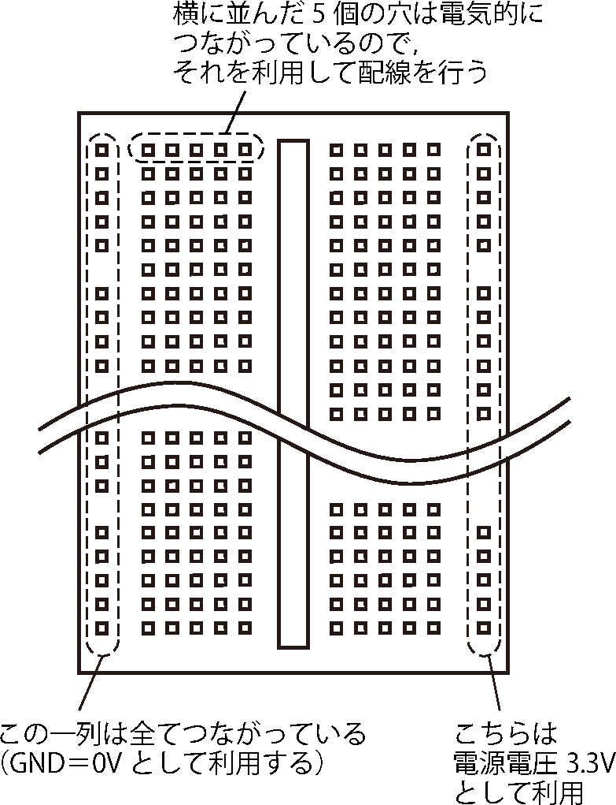
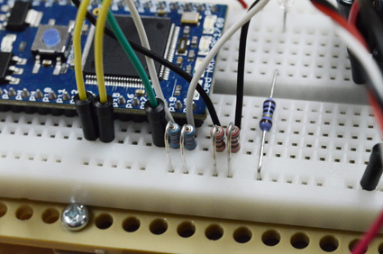
For example, mbed should already be inserted on the breadboard. If you want to connect something to a pin of mbed, just insert a wire or leg of a resistor into the hole immediately next to that pin (see Figure (Fig.)).
Also, lines for power supply voltage are prepared on the breadboard. The holes lined up vertically at both ends of the board are electrically connected in one vertical column respectively. There is one column on the right and left, so use them as GND and 3.3V respectively. For this purpose, connect the output pin (3.3V) of the three-terminal regulator to some hole in the right column (any is fine) with a wire. Similarly, connect the left column to GND (black wire coming from the battery).
Using Fritzing for Circuit Design¶
Because breadboard wiring can become visually complex and error-prone, we recommend drafting your circuit with Fritzing12 before building it on a real breadboard. Fritzing is a free and open-source electronic design automation (EDA) tool designed for breadboard-based prototyping, and it provides synchronized Breadboard, Schematic, and PCB views.
For this experiment, we provide custom Fritzing parts for the Microcontroller, Motor Driver, and Photo Reflector modules. These parts must be imported into Fritzing first and then placed from the parts library.
Figure (Fig.) shows example circuit views for this experiment. Before placing parts and routing wires, open the View menu in Fritzing and uncheck Align to Grid; grid alignment is not convenient for the component placement and wiring in this setup. We also provide an example design where the motor driver section is already wired (Figures (Fig.) and (Fig.)). Use it as a reference, and see the Circuit Assembly subsection in Week 1 for the detailed parts list and step-by-step procedure. A full sample circuit is also given in the appendix13 for reference whether you use Fritzing or not.
| Example in Schematic View | Corresponding Breadboard View wiring |
|---|---|
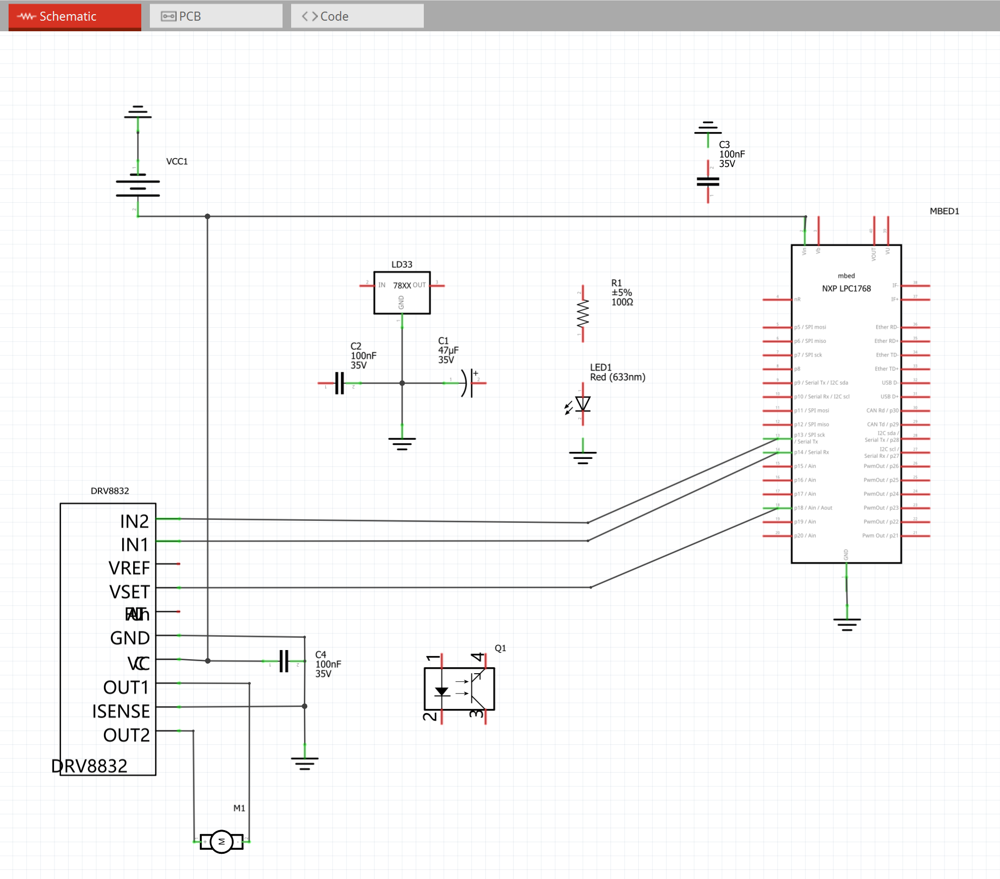 |
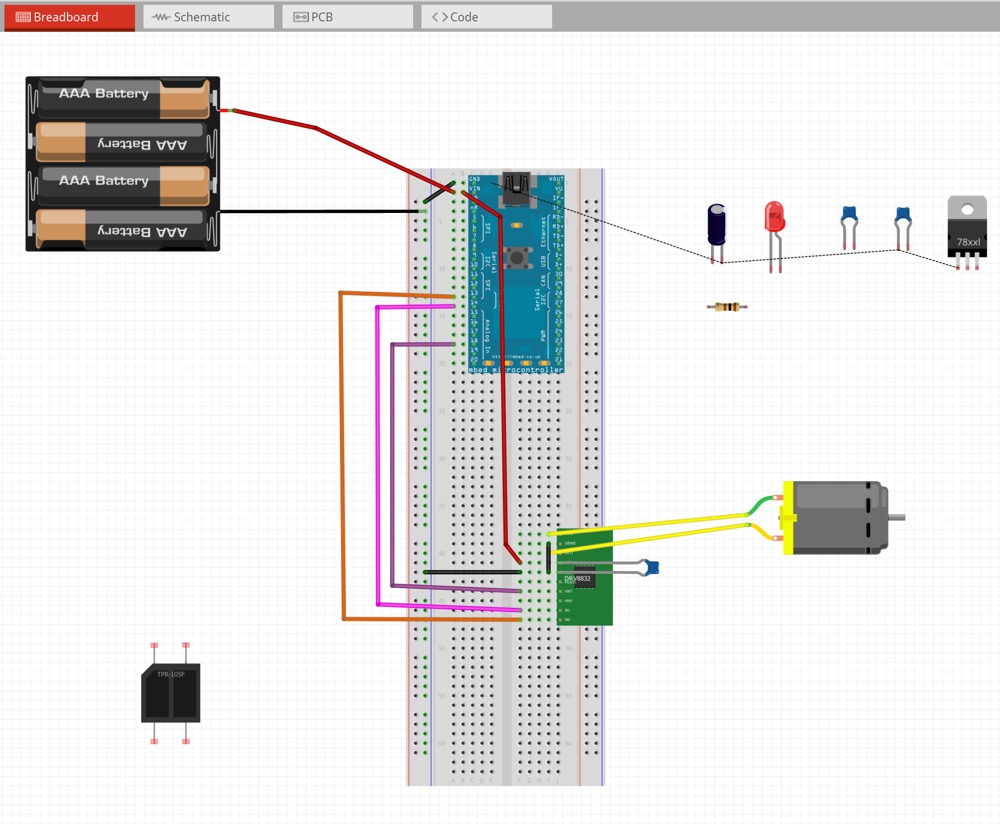 |
When using Fritzing, start by importing all provided custom parts, then create a new sketch and place all modules that will be mounted on your panel (microcontroller, motor driver, photo reflector, regulator, battery connector, etc.).
Next, use Schematic View to confirm which pins must be connected and to catch missing connections, and then implement the same connectivity in Breadboard View. The physical placement can be different, but the electrical connections must match. When routing wires, prioritize readability: keep them as short as possible, avoid unnecessary crossings, and group wires by function (power, motor, sensors, encoder). This will make the real breadboard assembly faster and reduces debugging time.
Before building on the real breadboard, perform a final check on your Fritzing design by verifying every net related to power (3.3V/GND), motor driver inputs/outputs, and sensor signal lines, and confirming that each signal is connected to the intended microcontroller pin. In particular, complete the full panel circuit design in Fritzing first (all modules placed and all connections routed and checked) before you start assembling on the breadboard.
Sync Point (All Students)¶
Before starting the team circuit assembly, confirm that:
-
The mechanical platform is complete and the motor roller contact is correctly adjusted
-
The microcontroller can be programmed and serial communication works
-
The Fritzing design includes all modules and all required nets are routed and checked
Circuit Assembly (Team Collaboration)¶
This part is performed as a team. To minimize the risk of errors and facilitate debugging, we assemble and test the circuit in three stages.
Safety precautions¶
Warning
-
Before turning on the power switch, check carefully that there are no mistakes in the wiring around the power supply at least!
-
If there is a mistake in the wiring around the power supply (connecting plus and minus in reverse, short circuit, etc.), the circuit will be destroyed at the same time as switch on.
-
It is dangerous to turn on the switch and see what happens, so check well in advance instead of taking a chance. Especially, pay attention to power connection to microcontroller/motor driver and polarity of electrolytic capacitor.
-
Disconnect power before rewiring. Never move wires on a powered breadboard.
-
Keep the motor power (battery) and sensor power (3.3V regulator) separated as instructed.
Soldering and continuity checks. During circuit assembly, you will use a soldering iron to solder resistors and DuPont wires (or leads) to make robust connections. Before powering the circuit, you can use a multimeter in continuity mode (buzzer) to verify.
Warning
-
Unplug the soldering iron after use, and let it cool down before storing it or leaving the bench.
-
Never leave a powered soldering iron unattended.
Assembly strategy (3 stages)¶
To minimize the risk of errors and facilitate debugging, we recommend assembling and testing the circuit in three stages[^16]:
-
Motor Driver and Motor Testing - Verify motor control (forward/reverse rotation and speed control)
-
Angle Sensor Testing - Verify sensor signal acquisition and processing
-
Complete Circuit Assembly - Integrate all components for final control system
This staged approach allows you to identify and fix problems early, before the circuit becomes too complex. Each stage has a dedicated example program and debugging tool to help you verify correct operation.
Stage 1: Motor Driver & Motor Testing¶
Objective¶
In this first stage, you will assemble the power supply circuit, motor driver (DRV8832), and motor. The goal is to verify that you can control the motor's direction (forward and reverse) and speed using PWM signals from the mbed.
Circuit Components for Stage 1¶
-
mbed LPC1768 microcontroller
-
Battery box (4 AA batteries, 6V)
-
Three-terminal regulator (LD1117V33) for 3.3V supply
-
Motor driver IC (DRV8832)
-
DC motor (RE-280RA)
-
Bypass capacitors (ceramic capacitors for power stabilization)
-
Electrolytic capacitor for regulator
-
Jumper wires
Note: For detailed part numbers, specifications, and quantities, refer to Appendix app:partslist.
Wiring Instructions¶
Wire the circuit according to the motor driver section of the sample circuit diagram14. Key points to remember:
-
In the sample circuit diagram, capacitors are inserted between the power pins of mbed and motor driver and GND. This is called a bypass capacitor (bypass cap), which has the role of softening power supply voltage fluctuations due to voltage drops in wiring (which also has resistance) and stabilizing IC operation. It is an iron rule to install this bypass capacitor right next to the power pin (adjacent hole). Even if it is the same on the circuit diagram, installing it far away makes the bypass capacitor meaningless.
-
Similarly, install the capacitor connected to the three-terminal regulator in the immediate hole.
-
Connect the three-terminal regulator output (3.3V) to one vertical power rail on the breadboard
-
Connect GND (battery black wire) to the other vertical power rail
-
Pay careful attention to electrolytic capacitor polarity (the stripe indicates negative side)
-
See Section 3.2.1 for capacitor markings (e.g.,
0.1u/104) and which capacitors are polarized vs. non-polarized. -
Double-check all power connections before turning on the power switch
Example Program and Debugging Tool¶
We provide an example program () that demonstrates motor control. This program allows you to test:
-
Motor forward rotation at various speeds
-
Motor reverse rotation at various speeds
-
Motor stopping and braking
To help you visualize the control signals and verify correct operation, we provide Debugging Tool 1: Motor Controller (located in ). This tool consists of:
-
1_motor_controller.cpp: mbed program that receives text commands via serial (115200 baud). Commands:
F xx(forward at xx% duty),B xx(backward at xx%),S(stop). Uses pins p13 (motor forward), p14 (motor reverse), and p18 (PWM voltage). -
1_motor_controller.bin: Pre-compiled binary---drag and drop to mbed USB drive to program the microcontroller.
-
1_motor_controller.pde: Processing GUI with sliders and buttons to interactively control motor speed and direction without modifying code.
The Processing GUI displays real-time motor status including PWM duty cycle, direction (forward/reverse), and motor current (if current sensing is implemented). This tool allows you to test the motor driver circuit thoroughly before integrating it with control algorithms.
Verification Checklist¶
Before proceeding to Stage 2, verify:
-
Motor rotates forward when commanded
-
Motor rotates backward when commanded
-
Motor speed changes smoothly with PWM duty cycle
-
Motor stops completely when commanded
-
No abnormal heating of motor driver IC
-
Power supply voltage remains stable (measure with multimeter)
Stage 2: Angle Sensor Testing¶
Objective¶
In this stage, you will add the angle sensor (photo-interrupter or rotary encoder) to your circuit and verify that you can correctly read the pendulum angle. This is the most critical sensor for inverted pendulum control.
Additional Components for Stage 2¶
-
Photo-interrupter sensors (TPR-105F) \(\times\) 2
-
Pull-up resistors for sensor outputs
-
Additional jumper wires for sensor connections
Wiring Instructions¶
Add the sensor circuit to your existing motor driver circuit according to the sensor section of the sample circuit diagram15. Key points:
-
Connect sensor power to 3.3V rail (not 5V, as mbed inputs are 3.3V logic)
-
Install appropriate pull-up resistors on sensor output lines
-
Route sensor signal wires away from motor power lines to minimize noise
-
Ensure sensors are mechanically aligned with the encoder disk or slit pattern
Example Program and Debugging Tool¶
We provide an example program () that reads and processes sensor signals. This program demonstrates:
-
Reading digital sensor outputs
-
Calculating angle from sensor readings
-
Computing angular velocity by differentiation
-
Applying filtering to reduce noise
Debugging Tool 2: Analog Input Visualizer (located in ) provides real-time visualization of 4 analog input channels:
-
2_analog_input_visualizer.cpp: mbed program that reads 4 analog inputs at approximately 200 Hz and transmits data via serial (115200 baud) using a frame-based protocol (header: 0xAA 0x55, followed by 4 data bytes). Pins: p16 (CH1), p17 (CH2), p19 (CH3, typically photo-interrupter 1), p20 (CH4, typically photo-interrupter 2). The 4 channels can be used for any analog sensors: angle sensors, encoder signals, potentiometers, etc.
-
2_analog_input_visualizer.bin: Pre-compiled binary ready to flash to mbed.
-
2_analog_input_visualizer.pde: Processing program that displays 4-channel real-time waveforms. Can calculate pendulum angle and angular velocity when using photo-interrupters, or display encoder signals when using rotary encoders on CH1/CH2.
This versatile tool is essential for verifying sensor operation, detecting mechanical issues, and confirming signal quality. For angle sensors, you can manually move the pendulum and observe the sensor readings in real time. For encoders, you can rotate the wheel and observe the quadrature signals. The frame-based protocol ensures reliable data transmission by using header bytes to synchronize the data stream between mbed and PC visualization.
| Debugging Tool 1: Motor Controller GUI | Debugging Tool 2: Analog Input Visualizer |
|---|---|
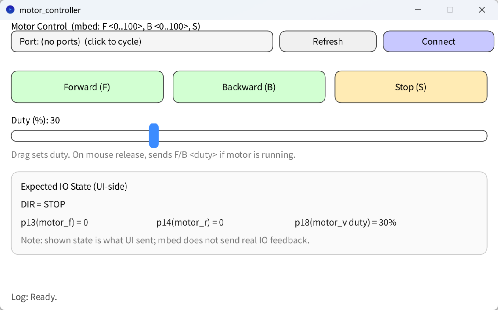 |
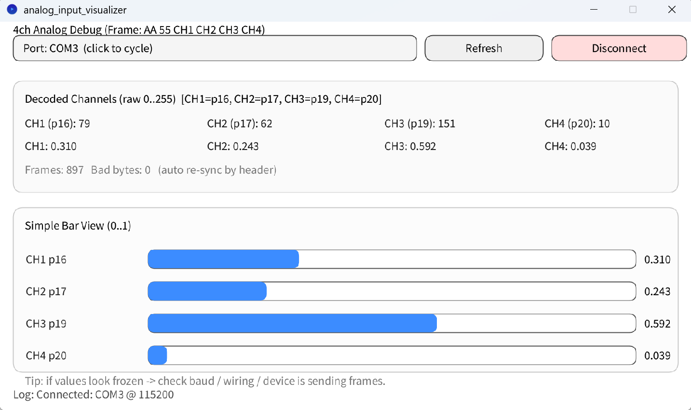 |
Verification Checklist¶
Before proceeding to Stage 3, verify:
-
Sensor outputs change correctly as pendulum moves
-
Angle calculation corresponds to actual pendulum position
-
Angular velocity shows reasonable values (not excessively noisy)
-
Sensors detect full range of pendulum motion
-
No sensor signal interference from motor operation
Stage 3: Complete Circuit Assembly and Integration¶
Objective¶
In this final stage, you will integrate the motor control and sensor systems into a complete feedback control system capable of balancing the inverted pendulum.
Final Assembly¶
Your circuit should now include all components according to the complete sample circuit diagram16. Review the entire circuit and verify:
-
All power connections are correct and secure
-
All bypass capacitors are installed adjacent to IC power pins
-
Wire routing is neat and organized (example shown below)
-
No wires are at risk of short circuits
-
All component orientations are correct (ICs, electrolytic capacitors)
General Notes on Circuit Assembly¶
-
The simpler the circuit looks, the better it works. Electronic circuits, especially analog circuits, change characteristics with slight wiring methods. Circuits that look beautiful = simple circuits tend to have better characteristics.
-
Since breadboards have large contact resistance, fewer wires allow more stable operation. Avoid daisy-chaining multiple jumper wires when a single wire would suffice.
-
Again, try not to touch the pins of IC/LSI (Resistors, capacitors, LEDs, three-terminal regulators are fine to touch).
-
The sample circuit diagram is just one wiring example, so you can use different pins for mbed input/output (However, AnalogOut is only available on p18, so it cannot be changed. Also, pins on the right side of mbed cannot be used due to space limitations). Rewrite the program according to the pins used.
-
Cut resistor legs to appropriate length to avoid short circuits (However, do not let the cut legs fly away).
-
Follow color conventions: red for positive power, black for GND (0V).
An implementation example of the complete circuit is shown in Figure (Fig.).
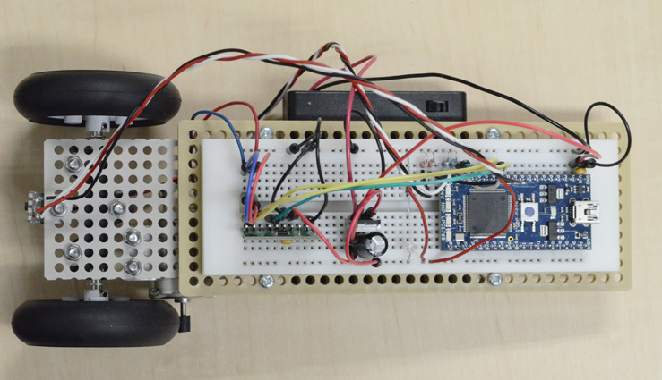
Integration Testing¶
With the complete circuit assembled, you can now test the integrated control system. The final control program combines motor control and sensor reading to implement feedback control. At this stage, you can use the comprehensive Debugging Tool 3: Six-Channel Oscilloscope (located in , also referred to as plotter6ch) to monitor all system variables simultaneously. This tool consists of:
-
3_six_channel_oscilloscope.cpp: Complete mbed control program implementing PD control at 2000 Hz sampling frequency. Reads two photo-interrupters (p19, p20), calculates angle and angular velocity, controls motor (p13, p14, p18), and transmits 6 data channels via serial (230400 baud) using frame protocol (header: 0xAA 0x55, followed by 6 data bytes). Control parameters (KP, KD, VLIMIT) can be adjusted by editing the
#definevalues at the top of the file. -
3_six_channel_oscilloscope.bin: Pre-compiled binary ready to flash to mbed.
-
3_six_channel_oscilloscope.pde: Processing program that displays 6 channels in two 3-channel plots (upper: CH1-Red, CH2-Green, CH3-Blue; lower: CH4-Red, CH5-Green, CH6-Blue). The 6 channels typically show: (1) photo-interrupter 1 output, (2) photo-interrupter 2 output, (3) angle (difference of sensors), (4) angular velocity, (5) filtered angular velocity, (6) reference line.
This is the primary tool for tuning control parameters and debugging the complete inverted pendulum system. See the file for detailed usage instructions, communication protocol, and how to modify the programs.
Team Final Task: Stand-up Experiment (Pre-Encoder)¶
At the end of Week 1 (before adding wheel encoders), your goal is to make the cart stand (balance upright) using angle-only feedback (P-only is sufficient for Week 1). You will use plotter6ch (Debugging Tool 3) and tune gains so the system can stand without violent vibration.
Expectation (Week 1): In principle, you should be able to achieve a basic stand-up with only a gentle nudge and small gain adjustments. If the result is not good enough yet, do not worry---you can preview the more detailed tuning procedure in Week 2 (including angular velocity, filtering, and adding D gain): see Section [4.4](#sec:w2-task-b). Quick workflow:
-
Flash to mbed (or compile after changing
#definegains). -
Open in Processing and run the oscilloscope GUI.
-
Press reset on mbed once after the GUI starts (to re-synchronize the frame alignment if the channel order looks wrong).
Warning
-
While the battery box is ON, the motor may keep running. Turn it OFF when not actively testing.
-
USB powers mbed only. If the motor does not move or sensor outputs look strange, double-check the battery box switch.
-
If high-frequency rattling/shivering occurs, turn off the battery box immediately to avoid overheating and damage.
Zeroing (recommended before connecting the motor):
-
Disconnect the motor from the motor driver.
-
Reset mbed. During the 1 second idle period, turn on the battery box.
-
Hold the system vertically and confirm the angle trace (typically the blue line) is near the screen center.
-
If not, mechanically fine-tune the sensor bracket so the vertical state corresponds to zero angle.
First stand-up attempt (P-only):
-
Reconnect the motor and motor driver. Keep the USB connected if you want.
-
Start with
KD=0and tuneKPfirst. -
Verify motor wiring direction: if the cart moves in the direction it is falling, it is correct. If it moves the opposite way (tries to fall by itself), turn off power and swap the motor wires (or the two wires between mbed and motor driver).
-
While testing, gently support the top of the machine (or the USB cable) so it does not fall, but do not hinder its motion.
KP gain adjustment guideline:
-
When
KPis low, relaxed (about 1--2 Hz) oscillation is seen. -
Increasing
KPincreases oscillation frequency and decreases oscillation amplitude. -
A good region is where it stands with minimal vibration (some small vibration may remain).
-
If
KPis too high, high-frequency rattling appears. -
Increasing further results in violent vibration.
Avoid high-frequency rattling. It can cause overheating and burnout of electronic parts and motors, and may loosen screws. If rattling occurs, turn off the battery box immediately.
Week 1 Submission¶
Submission
By the end of Week 1, your cart should be able to stand (balance upright)---congratulations on reaching this milestone!
Deliverable Max Scoring guide
Standing demonstration 20 20 pts: upright \(\geq\)15 s, full system in frame.\ 12 pts: upright achieved but \(<\)15 s or marginal stability.\ 0 pts: upright not achieved.
Safety & assembly visibility 5 5 pts: complete assembly clearly visible---mechanical structure, breadboard, and wiring all shown.\ 0 pts: assembly not visible in the video.
Video clarity 5 5 pts: all key parts unobscured throughout the recording.\ 3 pts: key behavior still identifiable despite partial obstruction.\ 0 pts: footage unusable (major parts obscured or out of frame).
Optional attachments: Fritzing (.fzz/images), photos, or debugging tool screenshots/logs.
-
Appendix app:circuit: Circuit example. ↩
-
Appendix app:drv8832: DRV8832 datasheet (Texas Instruments). ↩
-
Appendix app:tpr105f: TPR-105F datasheet. ↩
-
Appendix app:ld1117v33: LD1117V33 datasheet. ↩
-
A video demonstration of the mechanical assembly process is available in the course materials repository: ↩
-
For a complete parts list with detailed specifications and quantities, see Appendix app:partslist. ↩
-
Appendix app:re280ra: RE-280RA datasheet (Mabuchi Motor). ↩
-
There are various other microcontroller series such as Arduino, Raspberry PI, PIC, etc. ↩
-
Keil Studio Cloud: https://studio.keil.arm.com/ ↩
-
Access the course materials repository at https://github.com/UTokyo2026/UTokyo-Control-Practice-2026 ↩
-
Processing is a free, open-source software for visual programming. You can download it from https://processing.org/. As of 2026, the currently available major release is Processing 4. For more instructions, see Appendix app:processing. ↩
-
Fritzing installers (shared Google Drive): https://drive.google.com/drive/folders/1CwJ8srD090W6hOeP39BXLUZOVy883Kn2?usp=sharing ↩
-
Appendix app:circuit: Circuit example. ↩
-
Appendix app:circuit: Circuit example. ↩
-
Appendix app:circuit: Circuit example. ↩
-
Appendix app:circuit: Circuit example. ↩